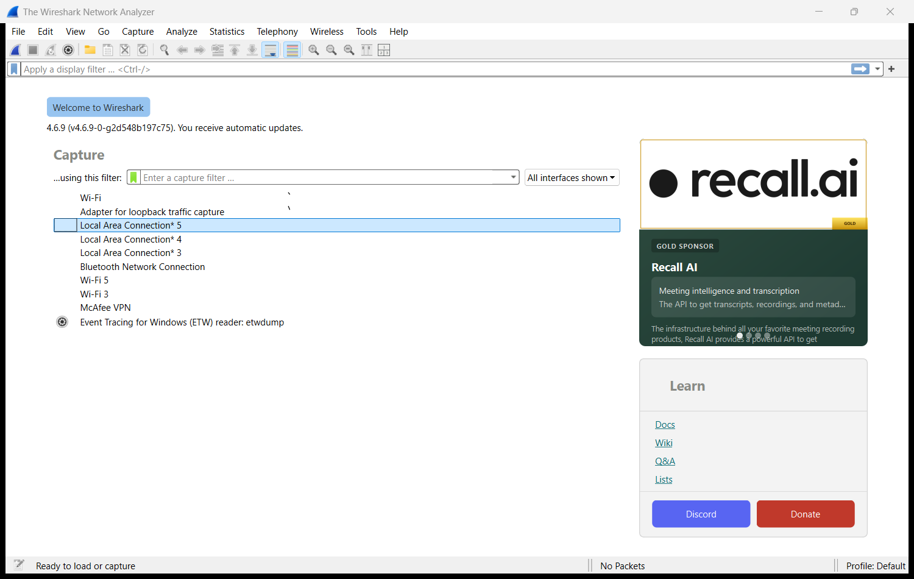
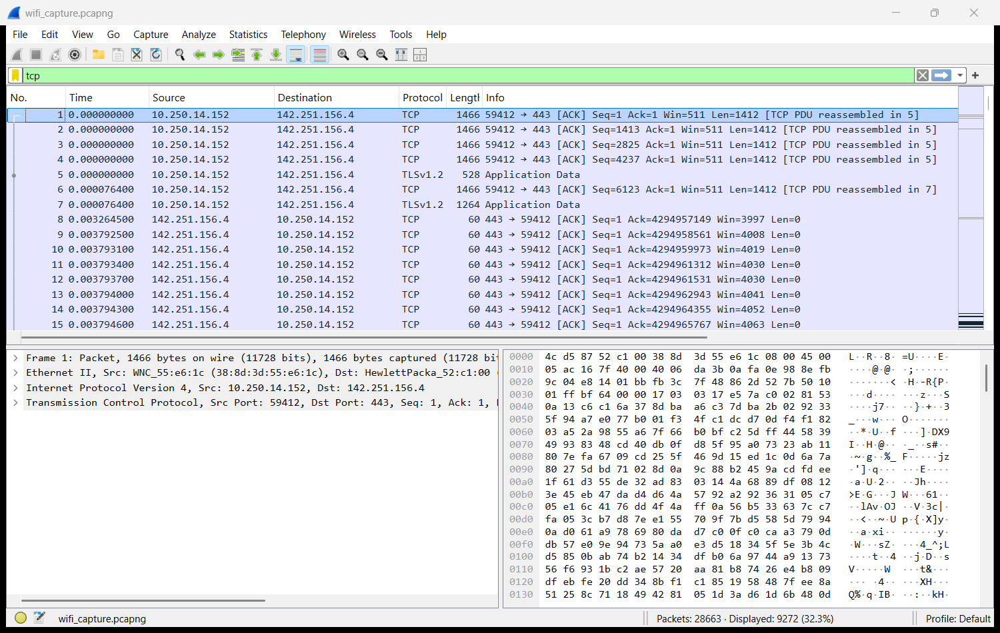
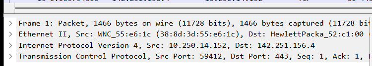
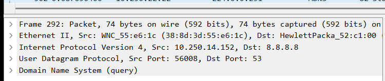

| Name | KARKALA SHIVA REDDY |
| Roll Number | 2520030105 |
| Section | 2 |
| Course | COMPUTER NETWORKS AND NETWORK PROGRAMMING |
| Submitted To | Department of Computer Science and Engineering |
To capture network packets and understand how Ethernet, IP, and TCP/UDP headers are added during data transmission.
Whenever data travels through a computer network, each protocol layer adds its own header to the data. These headers introduce overhead. Using Wireshark, real network packets were captured, the Ethernet, IP and TCP/UDP headers were examined, the total overhead was calculated, and the efficiency with which the network carries application data was determined.
Encapsulation is the process in which the data produced by an application is passed down the protocol stack. Each layer treats the data received from the layer above it as a payload and attaches its own header (and, at the link layer, a trailer). The transport layer creates a segment or datagram, the network layer places it inside an IP packet, and the data-link layer places the packet inside an Ethernet frame. The frame is then transmitted on the physical medium.
| Layer | Protocol data unit | Header added | Typical size |
|---|---|---|---|
| Application | Application data | No header at this layer | – |
| Transport | TCP segment / UDP datagram | TCP header or UDP header | 20 B / 8 B |
| Network | IP packet | IPv4 header | 20 B |
| Data link | Ethernet frame | Ethernet II header and FCS trailer | 14 B + 4 B |
| Item | Details |
|---|---|
| Packet analyser | Wireshark 4.6.9 (64-bit), with TShark 4.6.9 |
| Operating system | Windows 11 Home Single Language (64-bit), build 26200 |
| System | HP Laptop 15-fd0xxx, Intel Core i5-1334U, 16 GB RAM |
| Network interface | Wi-Fi (capture interface) |
| Local IPv4 address | 10.250.14.152 |
| Local MAC address | 38:8d:3d:55:e6:1c |
| Capture duration | 30 seconds (14:05:19 to 14:05:49 IST) |
| Capture file | wifi_capture.pcapng |
| Total packets captured | 28,663 |

| Display filter | Purpose | Packets observed |
|---|---|---|
| tcp | Displays TCP packets | 9,272 |
| udp | Displays UDP packets | 9,585 |
| icmp | Displays ICMP packets | 0 |
| tcp.len > 0 | Displays TCP packets carrying application data | 6,338 |
No ICMP packet was observed in this capture because no ping or traceroute command was run during the capture interval.

A TCP data packet (frame number 1) carrying TLS application data and a UDP DNS query packet (frame number 292) were selected from the capture. The values recorded from the packet details pane are given below.
| Parameter | TCP packet (frame 1) |
UDP packet (frame 292) |
|---|---|---|
| Frame length | 1466 bytes | 74 bytes |
| Ethernet header length | 14 bytes | 14 bytes |
| Source MAC address | 38:8d:3d:55:e6:1c | 38:8d:3d:55:e6:1c |
| Destination MAC address | 4c:d5:87:52:c1:00 | 4c:d5:87:52:c1:00 |
| IP header length | 20 bytes | 20 bytes |
| IP total length | 1452 bytes | 60 bytes |
| Source IP address | 10.250.14.152 | 10.250.14.152 |
| Destination IP address | 142.251.156.4 | 8.8.8.8 |
| Source port | 59412 | 56008 |
| Destination port | 443 | 53 |
| Transport header length | 20 bytes (TCP) | 8 bytes (UDP) |
| Application payload length | 1412 bytes | 32 bytes |
| Protocol shown by Wireshark | TLS | DNS |
| Total header overhead | 54 bytes | 42 bytes |


Note: Wireshark did not capture the Ethernet FCS in this trace, so the frame length shown above does not include the 4-byte FCS. The FCS is added below only where it is required by the calculation. A TCP connection setup packet (SYN) from the same capture had a 32-byte TCP header because of the MSS, window scale, SACK-permitted and timestamp options, which is an additional 12 bytes of overhead with no application data.
(a) TCP data packet (frame 1)
Ethernet (14) + IPv4 (20) + TCP (20) + Payload (1412) = 1466 bytes
Overhead = 14 + 20 + 20 = 54 bytes (58 bytes with FCS)
Payload efficiency = 1412 / 1466 × 100 = 96.32%
Overhead percentage = 54 / 1466 × 100 = 3.68%
Including the 4-byte FCS, the total frame size becomes 1470 bytes and the efficiency is 1412 / 1470 × 100 = 96.05%.
(b) UDP DNS query packet (frame 292)
Ethernet (14) + IPv4 (20) + UDP (8) + Payload (32) = 74 bytes
Overhead = 14 + 20 + 8 = 42 bytes (46 bytes with FCS)
Payload efficiency = 32 / 74 × 100 = 43.24%
Overhead percentage = 42 / 74 × 100 = 56.76%
Including the 4-byte FCS, the total frame size becomes 78 bytes and the efficiency is 32 / 78 × 100 = 41.03%.
(c) Reference calculation for a full-size TCP segment
For a basic Ethernet + IPv4 + TCP packet without TCP options and with 1500 bytes of application data:
14 + 20 + 20 + 1500 + 4 = 1558 bytes
Overhead = 14 + 20 + 20 + 4 = 58 bytes
Payload efficiency = 1500 / 1558 × 100 = 96.28%
The network packets were captured successfully and the Ethernet, IPv4 and TCP/UDP headers were examined. The TCP data packet had a frame length of 1466 bytes with 54 bytes of header overhead, giving a payload efficiency of 96.32%. The UDP DNS query had a frame length of 74 bytes with 42 bytes of header overhead, giving a payload efficiency of 43.24%. The measured values confirm that the header overhead reduces the amount of application data carried in each frame.
Encapsulation is the process of adding protocol control information to the data as it moves down the protocol stack. The application data is passed to the transport layer, which adds a TCP or UDP header and forms a segment or datagram. The network layer adds an IP header and forms a packet. The data-link layer adds an Ethernet header and trailer and forms a frame, which is then sent over the medium. At the receiver, each layer removes its own header and passes the remaining data to the layer above.
The Ethernet header identifies the source and destination MAC addresses of the frame, so that the frame is delivered to the correct device on the local network. It also contains the EtherType field, which tells the receiver which upper-layer protocol (for example IPv4) is carried inside the frame. The Ethernet trailer contains the frame check sequence (FCS), which is used to detect transmission errors.
The IPv4 header contains the version, header length, differentiated services field, total length, identification, flags and fragment offset, time to live (TTL), protocol number, header checksum, source IP address, destination IP address and optional fields. These values are used for addressing, routing, fragmentation and error checking of the packet across networks.
The TCP header is 20 bytes long, or up to 60 bytes with options, and contains source and destination ports, sequence number, acknowledgement number, flags, window size, checksum, urgent pointer and options. TCP is connection-oriented and provides reliable, ordered delivery with flow control and congestion control. The UDP header is only 8 bytes long and contains source port, destination port, length and checksum. UDP is connectionless and does not provide acknowledgement, retransmission or ordering, so it has less overhead and lower delay.
Each protocol layer performs a different task, and it needs its own control information to do that task. The transport layer needs port numbers to identify the application, the network layer needs IP addresses and TTL for routing, and the data-link layer needs MAC addresses for delivery on the local link. Adding a header at each layer allows the layers to work independently and lets the receiving side process the same information in the reverse order.
Packet overhead is the number of bytes in a frame that are used by protocol headers and trailers instead of application data. For a TCP/IP packet over Ethernet, the overhead is normally 14 bytes of Ethernet header, 20 bytes of IPv4 header and 20 bytes of TCP header, plus the 4-byte Ethernet FCS, which gives 58 bytes of overhead for each frame.
Header overhead reduces network efficiency because a part of every frame is used for control information rather than user data. The efficiency is the ratio of payload bytes to total frame bytes. Larger payloads give better efficiency: the captured TCP packet carried 1412 bytes with only 54 bytes of overhead and achieved 96.32% efficiency, while the small UDP DNS query carried 32 bytes with 42 bytes of overhead and achieved only 43.24% efficiency. Header options, such as the TCP timestamp and SACK options seen in the SYN packet, increase the overhead further. For small packets, the overhead can therefore consume more than half of the transmitted bytes.
The experiment showed how Ethernet, IPv4 and TCP/UDP headers encapsulate application data and how much overhead they add. The captured TCP packet used 54 bytes of header for 1412 bytes of payload, while the UDP DNS packet used 42 bytes of header for only 32 bytes of payload. Header overhead is small for full-size data segments but becomes significant for small packets, so the size of the payload has a direct effect on network efficiency. Wireshark made it possible to observe the actual header fields and to verify the encapsulation process on a live Wi-Fi network.